Analiza rješenja · JOI Spring Camp 2023 · Dan 2
Mizuyokan 2
O ovom članku
Tekst je prijevod službene japanske prezentacije rješenja, preoblikovan u članak. Slajdovi su ugrađeni kao slike; natpis pod svakim slajdom je prijevod teksta na njemu. Dijelovi označeni kao trenerska napomena nisu u izvornoj prezentaciji — dodani su da popune korake koje slajdovi preskaču ili samo skiciraju.
-
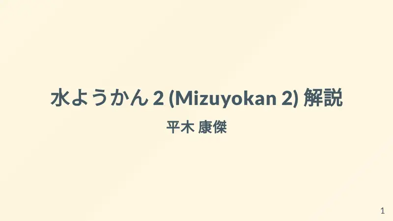
1Naslov; analiza: Hiraki Kōsuke. -
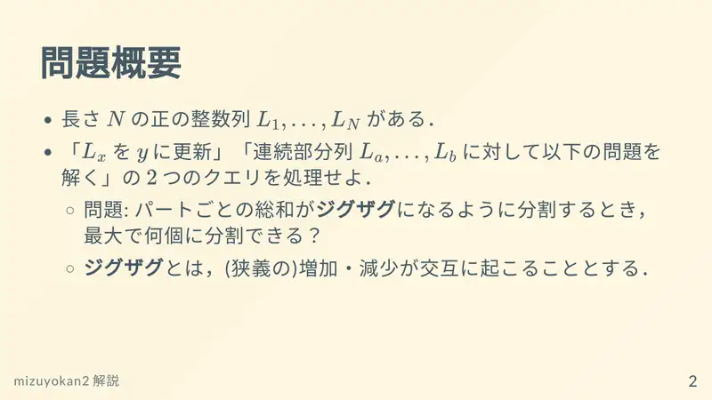
2Niz $L_1..L_N$; upiti „postavi $L_x := y$” i „za $L_a..L_b$: na koliko najviše dijelova sa cik-cak zbrojevima?” Cik-cak = strogi rast i pad naizmjence. -
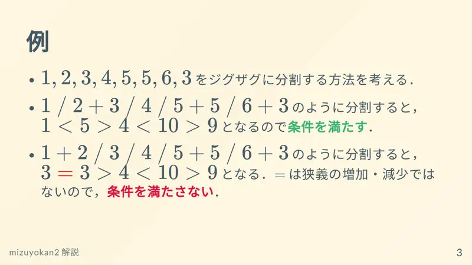
3Primjer $1,2,3,4,5,5,6,3$: podjela $1\,|\,2{+}3\,|\,4\,|\,5{+}5\,|\,6{+}3$ daje $1<5>4<10>9$ ✓; $1{+}2\,|\,3\,|\,4\,|\,5{+}5\,|\,6{+}3$ daje $3=3$ ✗. -
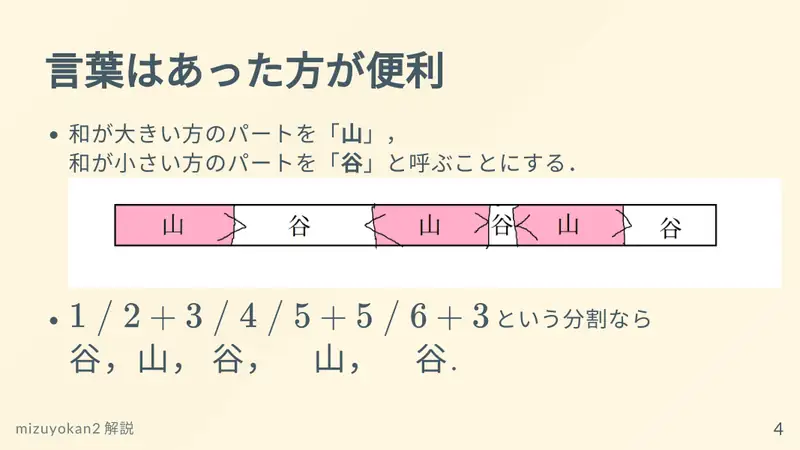
4Rječnik: dio s većim zbrojem = brdo, s manjim = dolina. -
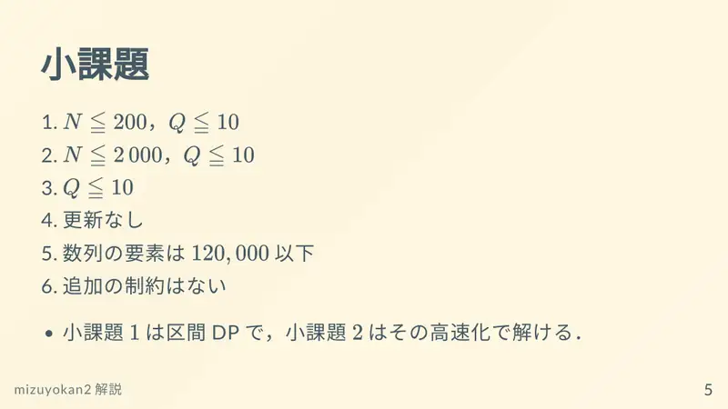
5Podzadaci; 1 je intervalni DP, 2 njegovo ubrzanje.
Podzadatak 3 28 bodova
-
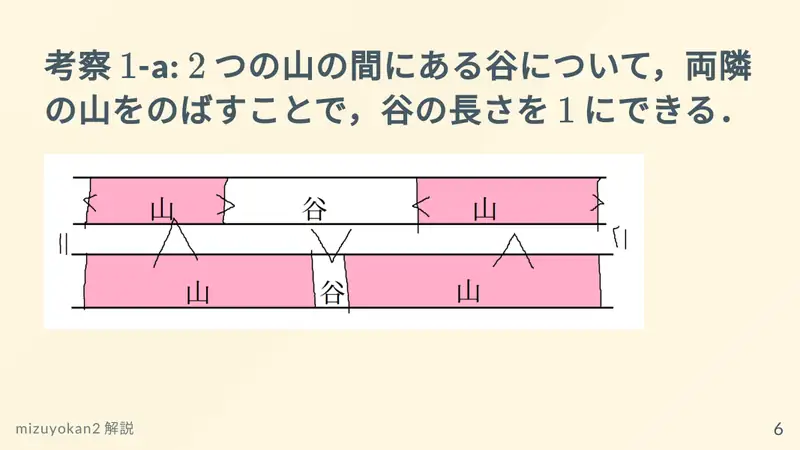
6Opažanje 1-a: dolinu između dva brda stisni na duljinu 1 šireći oba brda. -
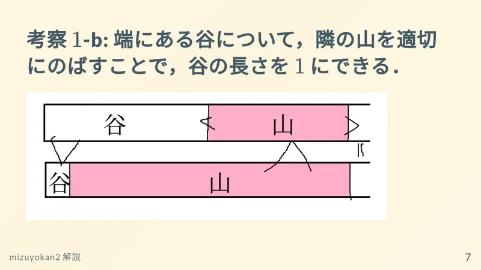
7Opažanje 1-b: rubnu dolinu stisni na duljinu 1 šireći susjedno brdo. -
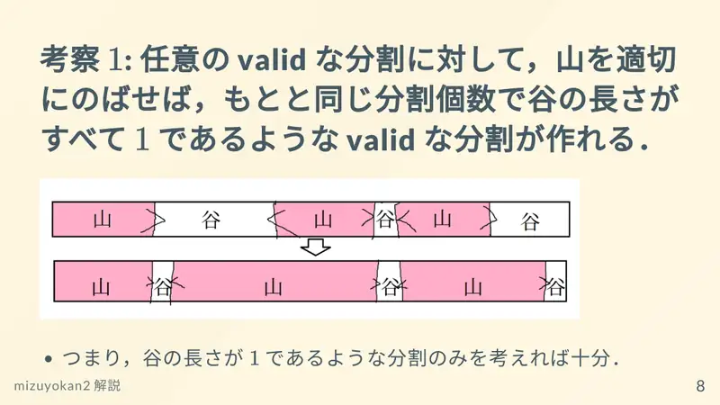
8Opažanje 1: svaka valjana particija prelazi u valjanu s istim brojem dijelova i svim dolinama duljine 1. -
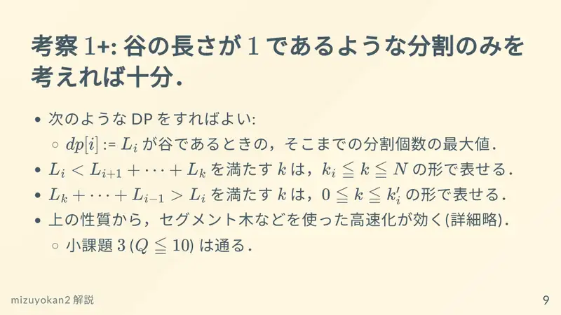
9DP: $dp[i]$ = najviše dijelova ako je $L_i$ dolina. Skupovi $k$ s $L_i < L_{i+1}+\dots+L_k$ su sufiksi $k \ge k_i$, a s $L_k+\dots+L_{i-1} > L_i$ prefiksi $k \le k'_i$ — segmentno stablo ubrzava (detalji izostavljeni). Prolazi podzadatak 3.
Wakayama i raspoređivanje intervala
-
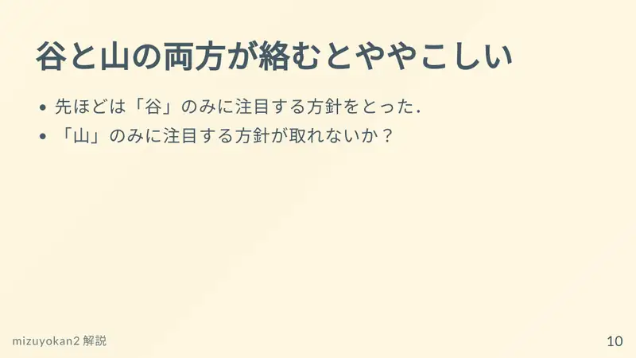
10Miješanje brda i dolina je zamorno; možemo li gledati samo brda? -
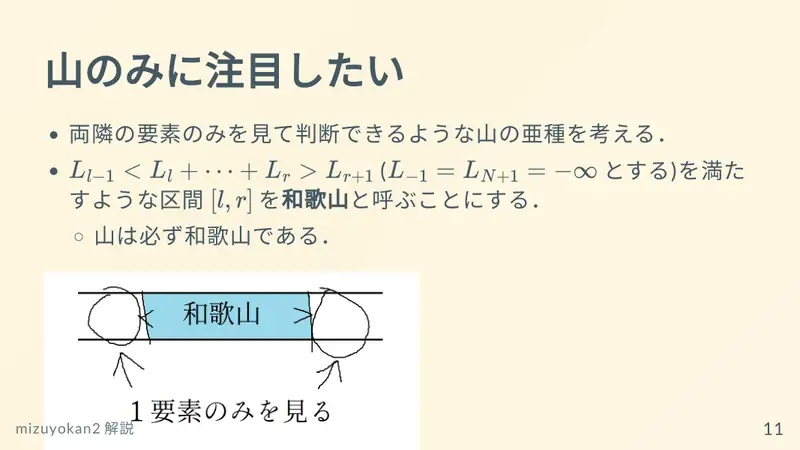
11Varijanta brda s lokalnim uvjetom: $[l,r]$ je wakayama ako $L_{l-1} < L_l+\dots+L_r > L_{r+1}$ ($L_0 = L_{N+1} = -\infty$). Svako brdo je wakayama. -
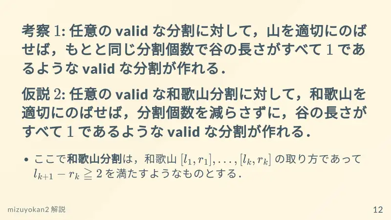
12Hipoteza 2: svaka valjana wakayama-particija (wakayame s $l_{k+1}-r_k\ge2$) širi se u valjanu particiju s dolinama duljine 1 bez gubitka dijelova. -
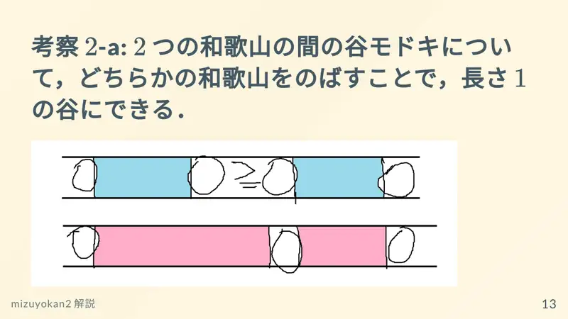
13Opažanje 2-a: „pseudo-dolinu” između dvije wakayame stisni na duljinu 1 šireći jednu od njih. -
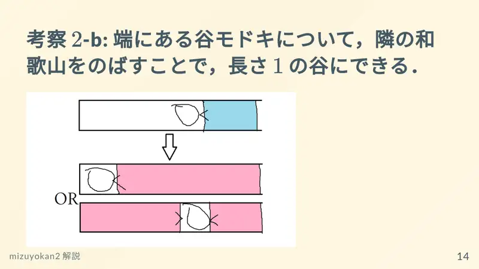
14Opažanje 2-b: rubnu pseudo-dolinu stisni šireći susjednu wakayamu. -
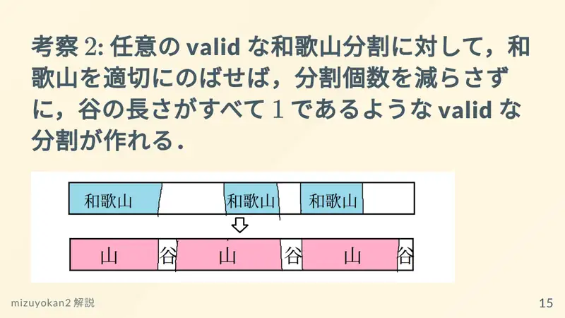
15Opažanje 2 dokazano (ilustracija). -
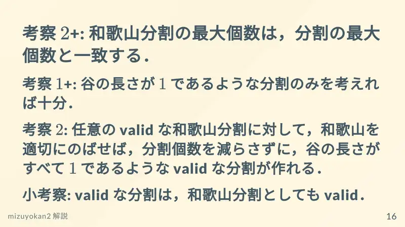
16Opažanje 2+: maksimalan broj wakayama-particije = maksimalan broj dijelova (valjana particija je i wakayama-particija). -
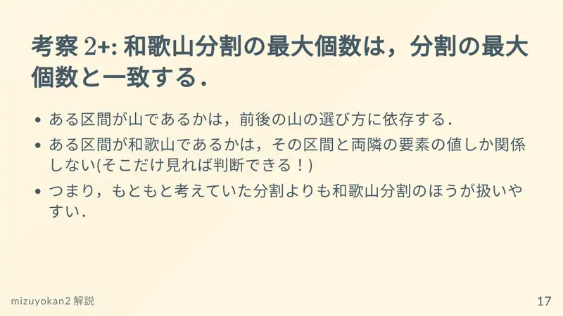
17Brdo ovisi o susjedima; wakayama samo o intervalu i dva susjedna elementa — lakše. -
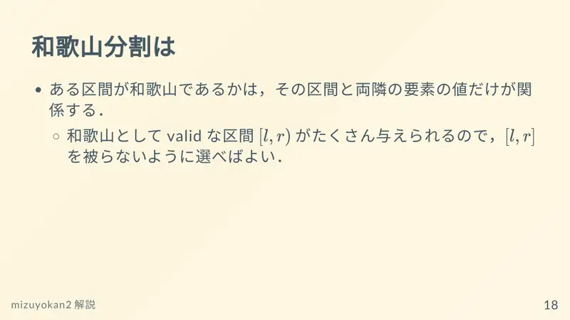
18Zadani su mnogi valjani intervali $[l,r]$; izaberi ih što više bez preklapanja (i s razmakom). -
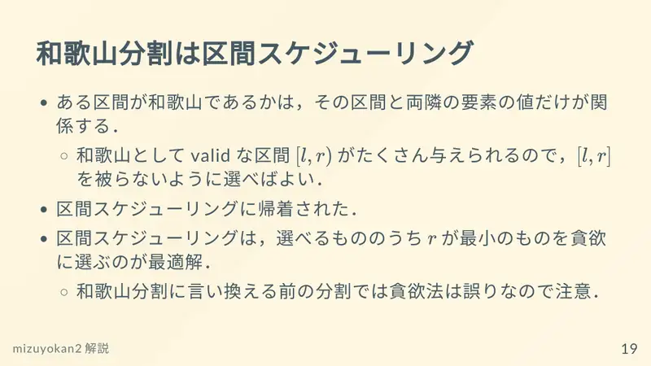
19To je raspoređivanje intervala: pohlepno najmanji $r$. Na izvornim brdima pohlepa je kriva — oprez.
Podzadatak 4 32 boda
-
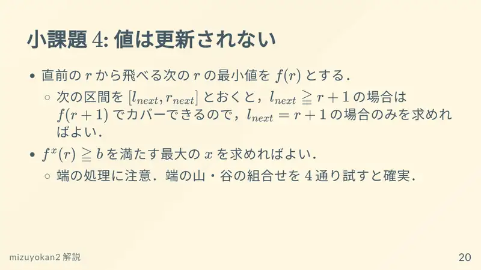
20$f(r)$ = najmanji sljedeći $r'$ dostižan iz prethodnog $r$. Slučaj $l_{next} \ge r+2$ pokriven je s $f(r+1)$, pa računaj samo $l_{next} = r+2$. Traži najveći $x$ s $f^x(r) \le b$. Rubovi: probaj 4 kombinacije brdo/dolina na krajevima. -
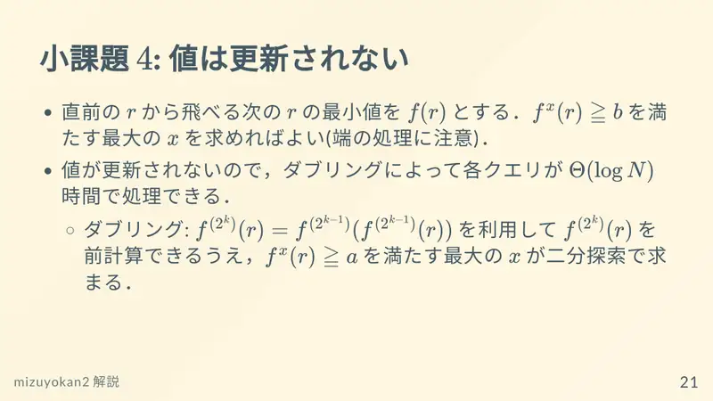
21Bez promjena: udvostručavanje $f^{(2^k)}(r) = f^{(2^{k-1})}(f^{(2^{k-1})}(r))$, binarno pretraživanje broja skokova: $\Theta(\log N)$ po upitu.
Puni bodovi 40 bodova
-
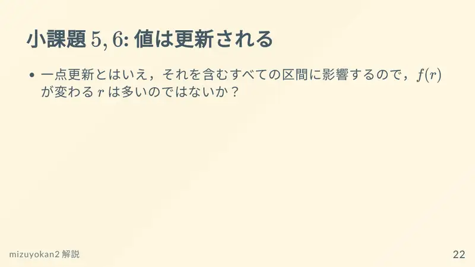
22S promjenama: jedna promjena utječe na sve intervale koji je sadrže — mijenja li se $f(r)$ za mnogo $r$? -
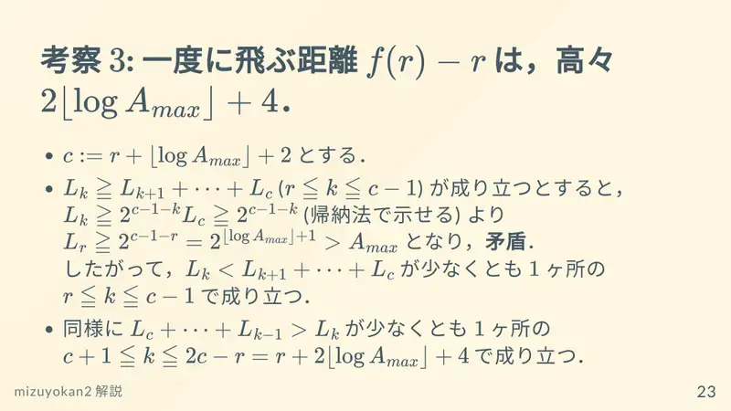
23Opažanje 3: $f(r)-r \le 2\lfloor\log A_{\max}\rfloor+4$. Neka $c = r+\lfloor\log A\rfloor+2$. Kad bi $L_k \ge L_{k+1}+\dots+L_c$ za sve $r\le k\le c-1$, indukcijom $L_k \ge 2^{c-1-k}L_c$, pa $L_r \ge 2^{\lfloor\log A\rfloor+1} > A_{\max}$ — kontradikcija. Simetrično zdesna. -
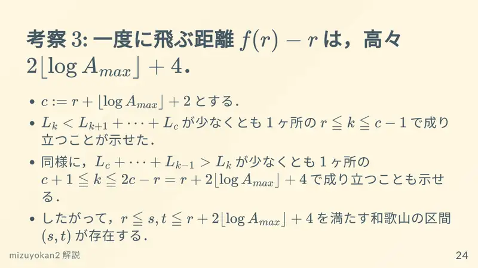
24Dakle postoji wakayama $[s,t]$ s $r \le s$, $t \le r + 2\lfloor\log A\rfloor + 4$. -
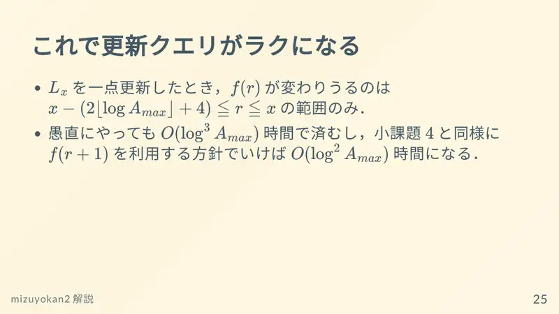
25Promjena $L_x$ mijenja $f(r)$ samo za $x - (2\lfloor\log A\rfloor+4) \le r \le x$: naivno $O(\log^3 A)$, s $f(r+1)$ $O(\log^2 A)$. -
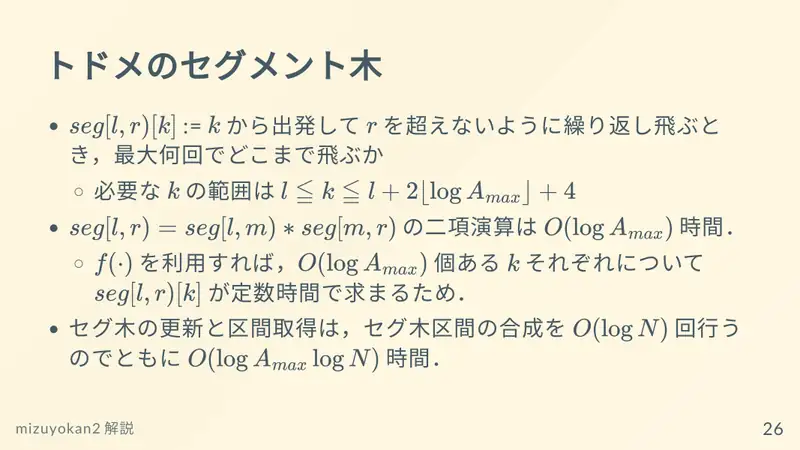
26Završni udarac: $seg[l,r][k]$ = od $k$ skači ne prelazeći $r$: koliko puta i kamo; potrebni $k$ su $l \le k \le l+2\lfloor\log A\rfloor+4$. Spajanje $seg[l,m] * seg[m,r]$ u $O(\log A)$ (uz $f$, svaki od $O(\log A)$ početaka u $O(1)$). Ažuriranje i upit: $O(\log A \log N)$.
-
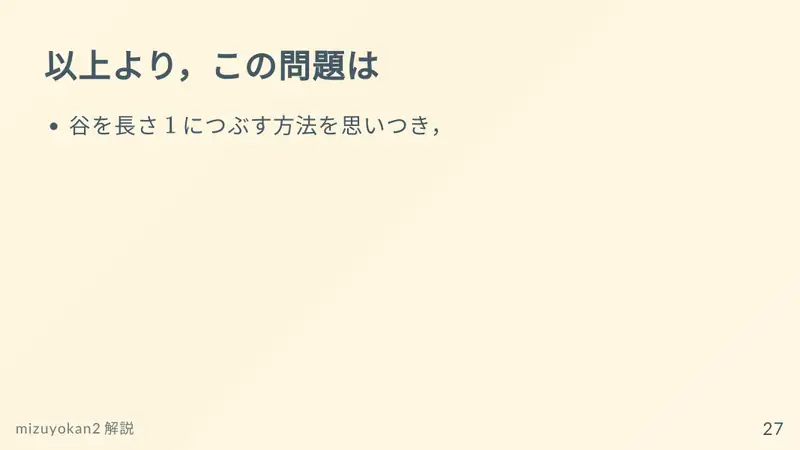
27Sažetak: stisni doline na duljinu 1… -
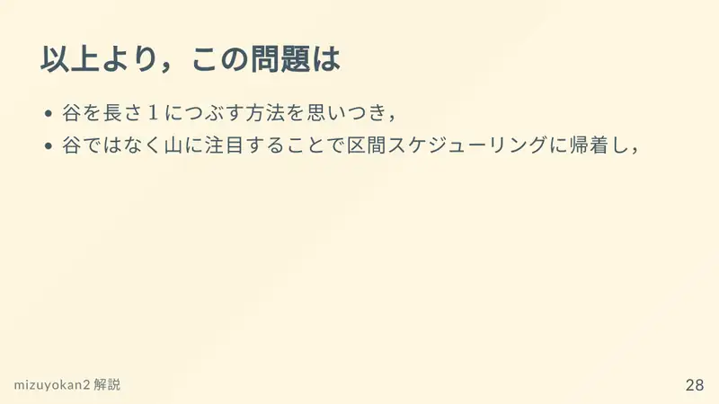
28…gledaj brda umjesto dolina → raspoređivanje intervala… -
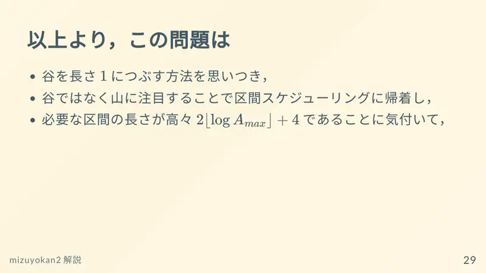
29…uoči da su potrebni intervali duljine $O(\log A)$… -
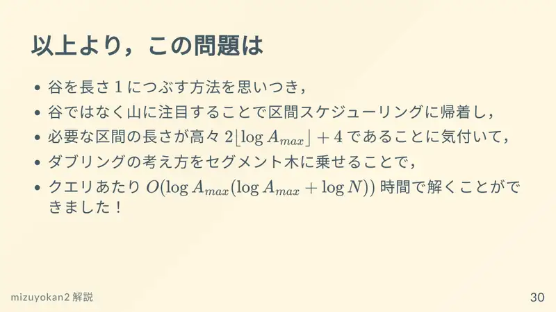
30…udvostručavanje prebaci u segmentno stablo: $O(\log A\log N)$ po upitu. -
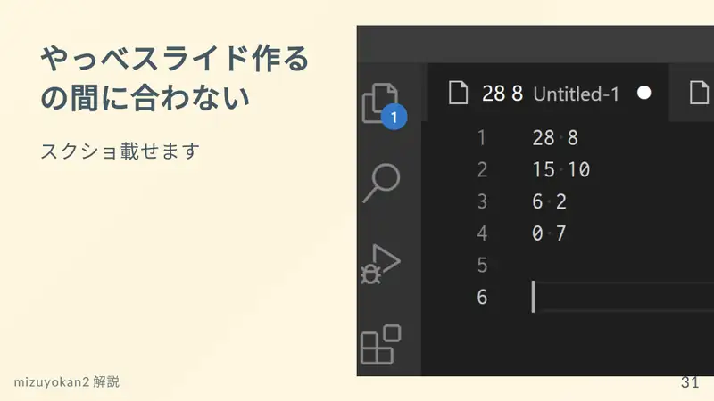
31(Autorova isprika: slajdovi nisu dovršeni, priložene su snimke zaslona.)
Sažetak
- Doline su jednočlane; brdo zamijeni lokalno provjerivom wakayamom ($L_{l-1} < \sum > L_{r+1}$).
- Maksimum wakayama s razmakom 2 = raspoređivanje intervala, pohlepno po najmanjem $r$.
- Skok $f$ je dug $\le 2\log A+4$; segmentno stablo koje po čvoru pamti $O(\log A)$ početaka daje $O(\log A\log N)$ po upitu i promjeni.